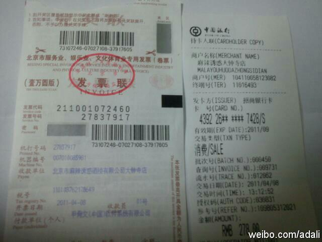

本来是很简单很商业的一件事，我们出钱，对方提供服务，即使服务终止了，未必以后就不会合作。但仅仅是拉走设备这件事儿的沟通上，对方一会儿说是朋友，一会儿说她感觉在求人，一会儿说心里不舒服，一会儿说已经给我很多面子，是她在帮我。搞不懂这里面的逻辑，我和她说的是两种语言，还是世界不同？

Ada李力
2011-05-12
Ada李力
2011-05-12
架构师这个微群，想找一个比较符合的图片当头像。下面那种图片形式比较好？1。纯文字，Architect; 2。建筑图片，比如艾菲尔铁塔；3。LEGO 玩具；4：框图。还有其它的建议吗？
Ada李力
2011-05-12
2008年请@cleverpig 给Sun的近百个校园大使做了个#如何组织社区活动#的讲座。Cleverpig说一定多讲干货，果然如此，后来制作的PPT也是精美得很， 网页链接
网页链接
Ada李力
2011-05-12
报销时才发现，给我的发票是248，但信用卡刷了278。以前听遇到过多算帐的情况，现在出了多刷卡的事情，怪自己没申核就签字。谴责麻辣诱惑大钟寺店，也给大家提个醒。
- 